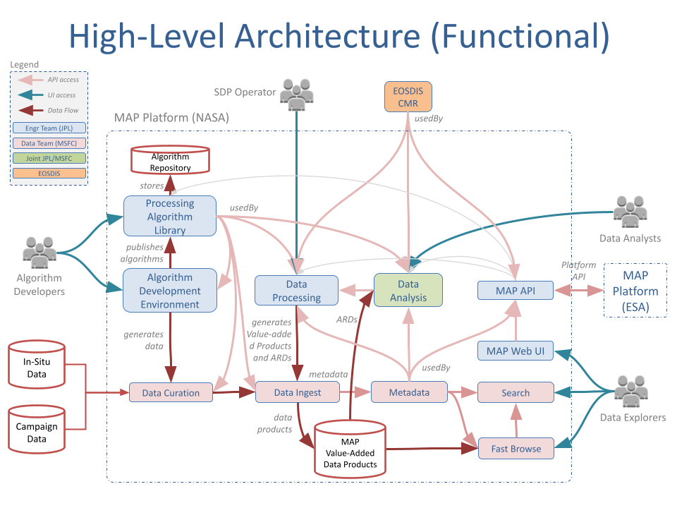
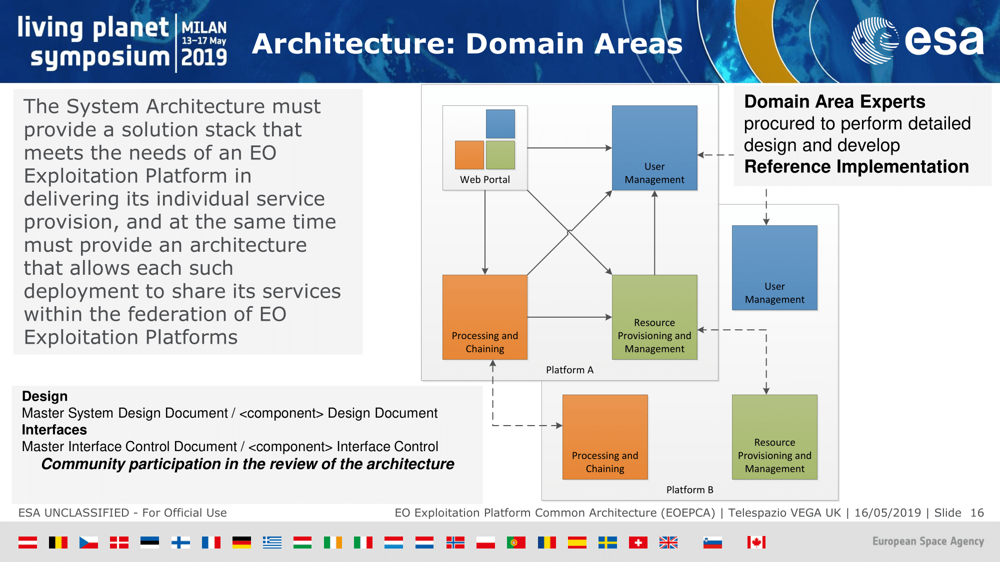
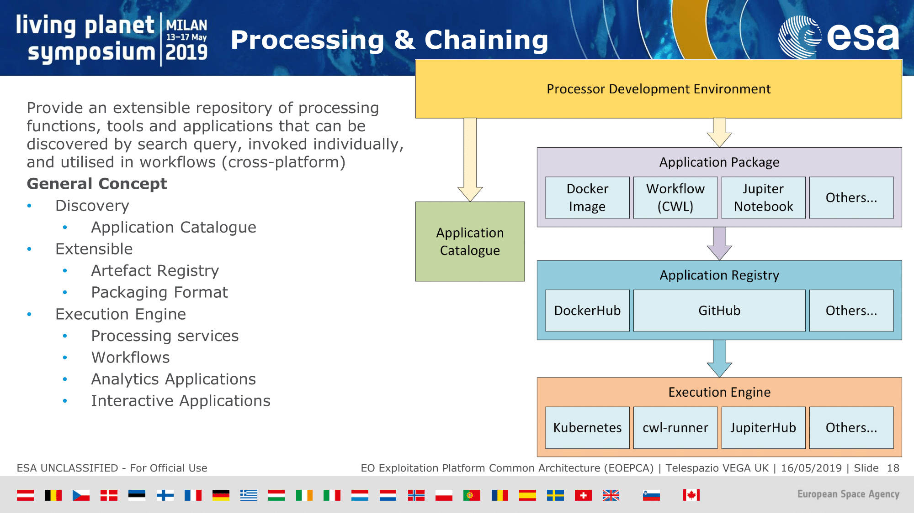
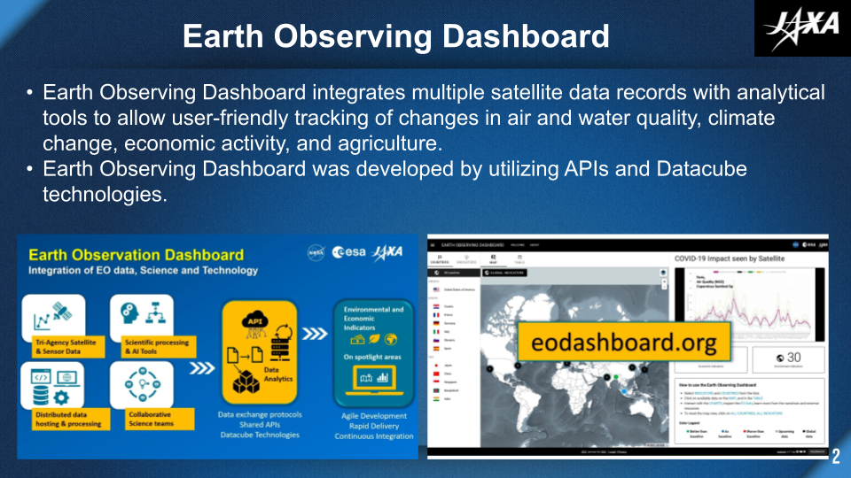
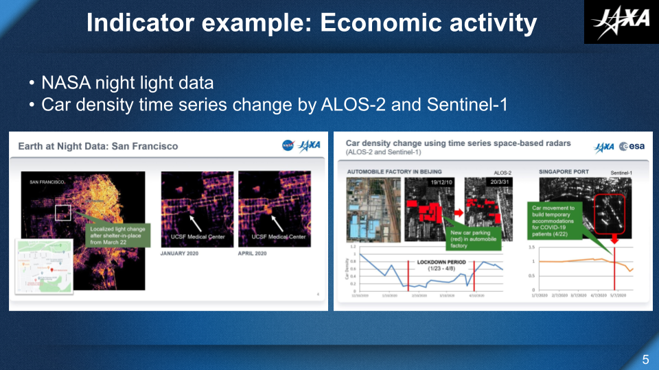

The History of
2018
MAAP: The Multi-Mission Algorithm and Analysis Platform
An analysis platform for above ground biomass estimation.
Core Components:
- Data Discovery via the Common Metadata Repository (MAAP CMR) Catalog
- Data Processing via Hybrid Cloud Science Data System (HySDS)
- Data Exploration + Analysis via the Algorithm Development Environment (ADE)



2019
Telespazio introduces the EO Exploitation Platform Common Architecture (EOEPCA) at ESA's Living Planet Symposium
EOEPCA is intended to be a widely adopted reference architecture and implementation for the future exploitation of distributed EO data and services.
Core Components
- Discovery + Access (Data Catalog)
- Applications (Notebooks)
- Processing


But 💶 €€€ we don't want to pay to move data and duplicate services.
EOEPCA identifies that we need a federated network of resources.
Core challenges to solve
- Users must have federated access to different catalogs
- Access, processing and visualization services must all provide interopable APIs
- Clients must be available to expose those APIs
2020
NASA-ESA-JAXA Dashboard join forces in response to COVID-19
JAXA, NASA and ESA launched a collaboration to analyze the changes in the global environment and socio-economic activities before and after the global epidemic using Earth observation satellite data from the three agencies.


Multiple dashboards, shared APIs
- The trilateral dashboard used NASA's data sets and dynamic tiler WMTS API for data visualization.
- NASA developed its own COVID-19 dashboard to provide customized map visualization, interactive charting and story telling.
- NASA's COVID-19 dashboard was replicated to support MAAP's Biomass Harmonization product.
2021
Earth Information Systems Pilot Year
- The Earth Information System (EIS) is a platform for understanding and answering critical questions about Earth's complex System of Systems.
- Using NASA's 20+ years of Earth observation data and novel modeling capabilities, it aims to support near-term and long-range analysis and decision making.
- EIS demonstrated open science by linking its pilot studies to accessible notebooks.
- https://eis.smce.nasa.gov/about.html
2022
NASA's Visualization, Exploration, and Data Analysis (VEDA) project
- Inspired by the success of the COVID-19 dashboard, VEDA was launched in 2022.
- VEDA is a set of open source software for building services and applications driven STAC.
- https://www.earthdata.nasa.gov/esds/veda
2023
Greenhouse Gas Center (GHG) Center
- EPA and NASA are collaborating to create a the Greenhouse Gas (GHG) Monitoring and Information Center.
- The mission of the GHG Monitoring and Information Center is to extend accessible and integrated GHG data and modeling capabilities from the U.S. Government and non-public sources for scalable impact.
- To deliver GHG Center, the VEDA team will create new instances of the VEDA Dashboard + STAC infrastructure to deliver the initial platform this summer.
2024
VEDA continues to develop an ecosystem of reusable tools which:
- Reduces the time to Earth insights.
- Reduce the time to reproducible science.
- Make results more accessible.
- Support open science through open software, open data, open results.
- How? Support workshops
- How? Grow the network of resources. GIBS uses VEDA's APIs for data owned by VEDA and VEDA uses GIBs APIs for data owned by GIBs.